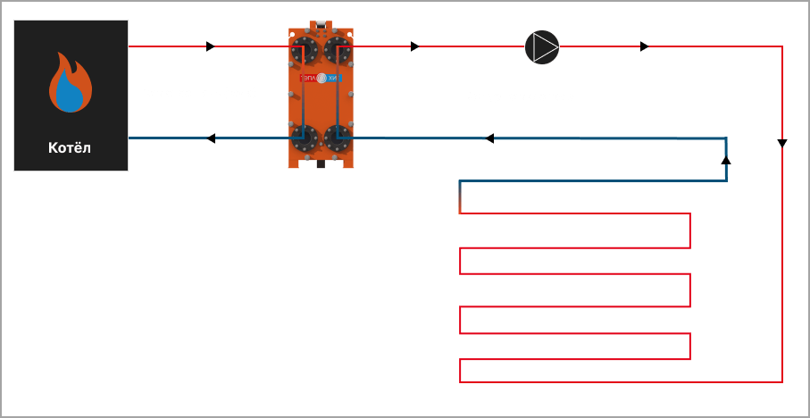

Теплообменник для теплого пола — классический теплообменник, один из контуров которого подключается к теплоносителю (в большинстве случаев это вода, нагретая в котле). Через теплообменник тепло передается во второй контур — систему труб, расположенных под поверхностью пола. Жидкость, постоянно циркулирующая по трубам, догревается в теплообменнике до нужной температуры, комфортной для человека, использующего теплый пол.
Теплый пол (водяной) - система, зависящая от системы отопления или являющаяся ее частью. Помимо бытового использования водяных теплых полов, такие системы с теплообменником может использоваться для обогрева и отопления больших площадей и помещений. В некоторых случаях классическое отопление может отсутствовать вовсе, и дом обогревается теплыми полами. При таком варианте расчитывается мощный теплообменный аппарат с учётом многих критериев.
Температура воды в системе теплого пола, а значит и сама температура пола поддерживается в диапазоне 30-35 °C, но может быть отрегулирована. Мощность теплообменника расчитывается исходя из величины 0,1 кВт на 1 м2. Другими словами в доме 100 квадратных метров на такую систему необходимо выделить 10 кВт тепловой энергии. Данная величина нормы является приблизительной, более точные цифры подскажет квалифицированный инженер по подбору теплообменника исходя из Вашей задачи.
Контур теплого пола обособлен от контура теплоносителя. Смешения жидкостей в теплообменнике не происходит, а тепло передается от одной среды к другой через пластины и изолированные каналы. Подробнее про внутреннее устройство теплообменника можно прочитать на странице принцип и схема работы теплобменника. Для обеспечения циркуляции жидкости в теплом полу во внутреннем контуре ставится насос.
То, что контура системы теплого пола изолированные, дает возможность залить во внутренний контур не воду, а незамерзающую жидкость (пропиленгликоль или этиленгликоль). Таким образом, ее необязательно сливать перед наступлением зимы в случае, если систему зимой не используют. Также становится возможным включать подогрев в зимнее время только тогда, когда это необходимо.
Теплообменник рассчитан на площадь отапливаемого помещения 300 м2. Мощность теплообменника составляет 30 кВт, расход по нагреваемой среде ~ 1 тонна в час. В данном примере используется этиленгликоль.